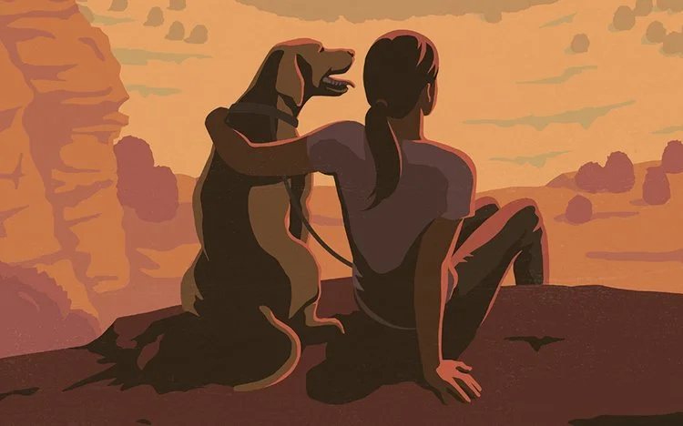
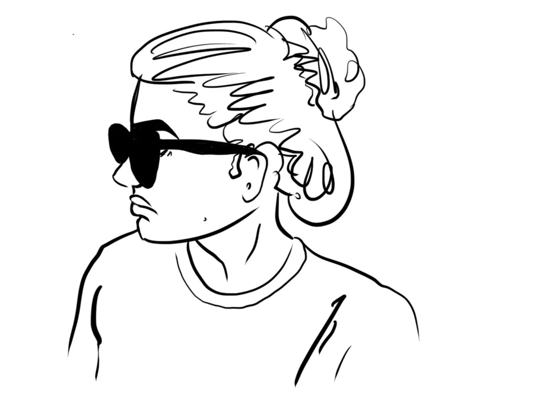

I’m an art director & this is my portfolio.
Born into a family of artists and writers sparked a lifelong obsession with the human condition.
Outside of advertising I host figure drawing classes, curate heirlooms, wander off-grid, and get into ‘good trouble.’
I started my career at TBWA\MAL under the direction of Lee Clow after being awarded the ‘Lee Clow Endowed’ scholarship at Art Center College of Design in Pasadena, and eventually joined the team at Chiat\Day in LA. Since then, I’ve popped over to the East Coast, working at JWT, Digitas, DDB, Grey NY, and remote gigs across the UK and Europe.
Say hi: maia.swift@gmail.com